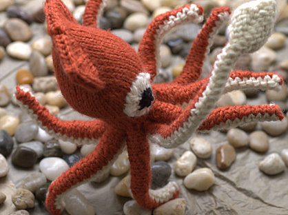
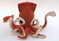
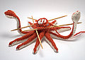

|
||
Premium Patterns Wintry Mix Mitts Love Bytes HawkeyeFree Patterns Kiddie Cadet Summerlin Ruffled Scarf Seamless DS Sock Simply Seamless Pouch Myriads of MushroomsExtras DIY Mitten Blocker Felt Patch Tutorial Yarn Dyeing Tutorial Needle Pouches Knitting Journal |
September 04, 2007 - Posted by Grace SchneblyIn The Deep Project Specs When I heard that Hansi Singh was coming out with a squid pattern I was super excited! For some reason I have always been interested in cephalopods, and after how much fun her octopus pattern was to knit, I just had to give the squid a try. Sadly he got put on the back burner for a while after I started my Icarus Shawl, but yesterday I picked it back up and finally finished him. Just like the octopus, this squid has posable arms and tentacles and is more realistic looking than cutesy. That’s what I really love about Hansi’s designs; they capture the essences of real sea creatures! I feel like I could fish this guy out of the ocean somewhere. I’m so glad that I used Paprika for the main body color. I wanted my squid to be as believable as possible, so I went surfing the internets for a little inspiration and came across this squid photographed by the University of Hawaii. Now I have my very own Histioteuthis hoylei! Over all I am really pleased with how this little guy came out, but I have to admit it didn’t always go smoothly, and I almost gave up at one point! The squid took longer to knit than the Octopus, and it was more difficult too. This pattern really isn’t for the novice knitter. Maybe I am just having a hard time getting used to knitting worsted weight yarn on small needles, but my hands were hurting after this one! I really like the way that the squid is constructed. The arms and head are knit in once piece, allowing the ends from the pipe cleaners to be concealed in one section of the toy. I was a bit confused on how to close up the underside of the tentacle assembly, but I kind of just went for it without too much of a plan. It doesn’t look nearly as neat as the picture in the pattern shows, but I can definitely live with it! I do have one tip for making the tentacles though. 12” pipe cleaners are folded in half and then inserted into the arms, but the tentacles are too long and thin for that. Instead I folded down the tip of the pipe cleaner 1” and secured it with a good wrapping of electrical tape. This way you know the sharp end of the pipe cleaner won’t be poking out of the fabric. The mantle is knit from stitches picked up around the head. I made a mistake the first time I knit the mantle because I joined the yarn at the back of the head, instead of directly over one of the longer tentacles. This caused my mantle shaping to be off by 90 degrees, and I had to rip it out. The pattern doesn’t mention where to attach the yarn, but it is important to do so right above one of the long tentacles! Other than that, knitting the mantle was very simple. The fins on the other hand… well that is a different story! I don’t know if it was just me, but I had a heck of a time with the fins. I found it really difficult to work with the picked up stitches along the top of the head. It was just so tight, and it seemed no matter what I did it turned out not so great looking. Finally I ended up knitting through the back of the picked up stitches, and this made the transition from the mantle to fin pretty smooth. I never really figured out how to get that nice edge like the ones picture in the pattern, but I’ll just have to live with what I have. The fins were a real pain, and the only part of the squid that I didn’t enjoy knitting. In the end I am really glad that I got this guy finished. He was a lot of work, and I doubt that I’ll make another, but he turned out really cool! Now I have to decide which of her designs I will knit next! |
   Recent ReviewsRecent Posts
 Our Favorites
|
| © 2007 KathrynIvy.com | ||
{kind=link}
{kind=link}
{kind=link}